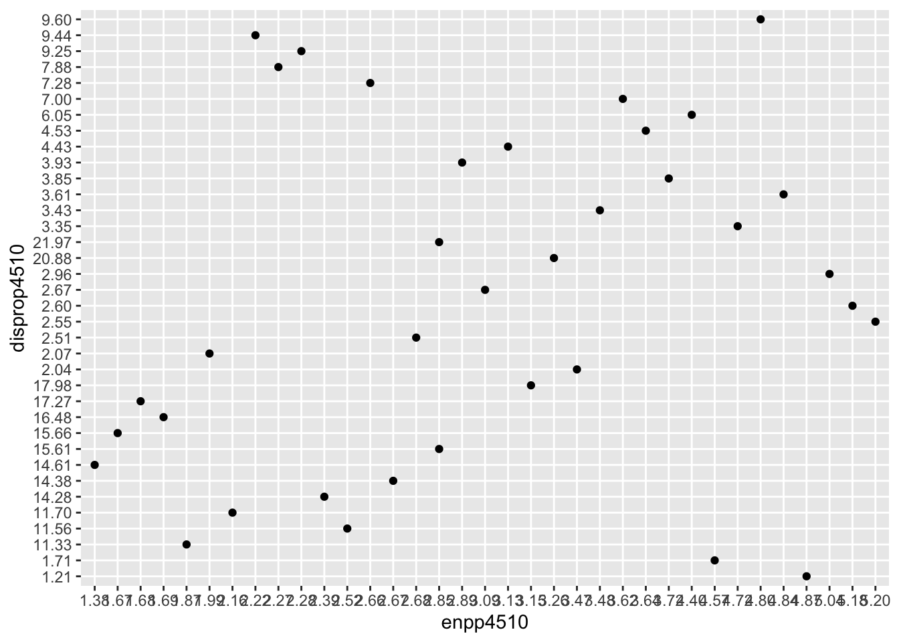

Das Statistikprogramm R bietet Forschenden viele Möglichkeiten zur Datenverarbeitung und Datenanalyse. R kann bei einfachen deskriptiven Statistiken sowie bei komplexen Algorithmen behilflich sein. Doch so groß die Möglichkeiten an Anwendungen ist, so groß ist auch die Möglichkeit auf Probleme zu stoßen. Das ist ganz normal und liegt in der Natur von R, da es sich um eine Programmiersprache handelt. Am Anfang werden Sie mit vielen Problemen konfrontiert sein. Doch im Laufe der Zeit wird es besser! Bis dahin können Sie sich an diesen Leitfaden orientieren. Wenn Sie ein Problem in dem Selbstlernkurs oder bei einer anderen Datenverarbeitung haben, können Sie in dieses Kapitel schauen und nach einer Lösungsmöglichkeit suchen.
getwd()
setwd("eigener Pfad")
library(foreign)
gles <- read.spss(file = "ZA6801_de_v4-0-1.sav", to.data.frame = TRUE)
lijphart <- read.csv2("Lijphart_Data_recode.csv")Doch wie identifizieren Sie Probleme in R? Grundsätzlich kommuniziert R mit Ihnen über den Output. Blauer Output zeigt an, dass der Code durchläuft. Schwarzer Output dagegen zeigt Ergebnisse an.
1+2## [1] 3Bei diesem einfachen Beispiel zeigt R mit dem blauen Output an, dass 1+2 gerechnet wird. Diesen Output sehen Sie in Ihrer Konsole, wenn Sie den Code in Ihrem Skript durchlaufen lassen. Mit dem schwarzen Output zeigt R Ihnen die Ergebnisse an. In diesem Fall die Lösung der Addition.
Roter Output ist ein Kommentar von R. Dies ist nur ein Problem, wenn vor dem roten Output „Fehler“ oder „Error“ steht, es sich also um eine Fehlermeldung handelt. Bei diesen Fehlermeldungen kann der Code nicht ausgeführt werden. Des Weiteren gibt es Warnmeldungen. Dabei kann der Code ausgeführt werden. Es liegt hier kein direktes Problem vor, sondern R erkennt ein Problempotenzial. Teilweise gibt R Ihnen auch ohne Warn- oder Fehlermeldungen roten Output aus.
Neben den Output können Fehler noch an anderen Stellen erkennt werden. So kommt es häufig vor, dass Objekte zwar in die working directory aufgenommen werden, aber der Inhalt der Objekte leer ist. Ein weiteres Indiz für einen Fehler ist, wenn eine Grafik nicht erscheint.
Die Problemlösung fängt in den meisten Fällen dort an, wo die Problemerkennung aufhört. Schließlich beinhalten die Fehlermeldungen in R meistens eine kurze Beschreibung des Problems. Diese Beschreibungen sind manchmal deutlich, meist aber nicht konkret genug, um den Fehler zu verstehen. Wenn Sie die Fehlermeldung nicht verstehen, ist es sinnvoll diese im Internet nach zu schlagen.
Bevor Sie sich weitere Hilfe holen, lohnt es sich, dass Sie Ihren Code genau prüfen. Dabei sollten Sie im Hinterkopf behalten, dass R case sensitiv ist. Das heißt, dass R zwischen Groß- und Kleinschreibung unterscheidet. Prüfen Sie daher zunächst, ob Sie alles richtig geschrieben haben. Fast alle Wörter werden in R kleingeschrieben. Achten Sie zudem darauf, dass Sie die korrekte Rechtschreibung verwendet haben. Korrekt bedeutet in diesem Fall, dass die Schreibweise mit der Schreibweise der Funktionen und Ihren Objekten übereinstimmt.
Table(gles$q1) #falsch## Error in Table(gles$q1): konnte Funktion "Table" nicht findentable(gles$q1) #richtig##
## maennlich weiblich
## 1097 1015In diesem Beispiel versuchen wir uns einen Überblick über die Variable Geschlecht ausgeben zu lassen. Allerdings funktioniert der Code nicht, weil in der Regel die Funktionen in R kleingeschrieben werden. So auch die Funktion table(). Daher müssen wir die Schreibweise korrigieren.
tabel(gles$q1) #falsch## Error in tabel(gles$q1): konnte Funktion "tabel" nicht findentable(gles$q1) #richtig##
## maennlich weiblich
## 1097 1015Ähnlich verhält es sich mit diesem Beispiel. Hier ist das Problem, dass die Rechtschreibung nicht korrekt ist. Daher kann R die Funktion nicht mehr identifizieren. Durch eine Korrektur des Rechtschreib-/Tippfehlers kann das Problem gelöst werden.
Des Weiteren sollten Sie auf die Syntax von R Acht geben. R benötigt bestimmte Zeichen, um verstehen zu können, was Sie möchten. Es macht für das Programm einen großen Unterschied, ob Sie z.B. ein oder zwei Gleichzeichen benutzen. Daher empfehlen wir, dass Sie sich bei einem Problem der Syntax Ihrer Funktion bewusst werden. Dazu können Sie auf unserer Website nachschauen, im Internet suchen oder sich per help()-Funktion informieren.
x <- c(1;3) #falsch
help(c) #Aufrufen der Hilfe-Seite ## Error: <text>:1:9: Unerwartete(s) ';'
## 1: x <- c(1;
## ^x <- c(1:3) #richtig
x## [1] 1 2 3In diesem Beispiel möchten Sie einen Vektor mit den Zahlen von 1 bis 3 definieren. Mit etwas Recherche durch die help()-Funktion können Sie erkennen, dass R einen Doppelpunkt anstatt eines Kommas benötigt.
Wenn Sie sowohl Syntax als auch die Schreibweisen geprüft haben, kann es noch helfen Ihren vorherigen Code zu prüfen. Wir empfehlen hierbei, dass Sie jede Zeile Ihres Codes einzeln durchlaufen lassen. Damit können Sie prüfen, ob Sie einen Schritt Ihrer Datenverarbeitung vergessen haben. Ähnliches gilt für die Pakete. Für viele Funktionen ist es wichtig, dass Sie die entsprechenden Pakete installiert und geladen haben.
lijphart <- read.csv2("Lijphart_Data_recode.csv")## Error in file(file, "rt"): kann Verbindung nicht öffnenggplot(lijphart, aes(x = enpp4510, y = disprop4510)) +
geom_point()## Error in ggplot(lijphart, aes(x = enpp4510, y = disprop4510)): konnte Funktion "ggplot" nicht findenSo ist hier eine Fehlermeldung entstanden, weil das Paket ggplot2() nicht eingeladen war. Wenn Sie sich unsicher sind, ob eine Funktion Pakete benötigt, können Sie im Internet recherchieren.
library(ggplot2)
ggplot(lijphart, aes(x = enpp4510, y = disprop4510)) +
geom_point()
Ihr Problem löst sich, wenn Sie das richtige Paket eingeladen haben. Achten Sie ebenfalls darauf, dass Sie das entsprechende Paket bereits installiert haben. Falls das nicht der Fall sein sollte, können sich auch Fehlermeldungen ergeben.
Eine weitere Problemursache sind fehlende Objekte. Grund dafür sind neben Rechtschreib- oder Tippfehler, auch dass Sie vergessen haben eine Zeile Code durchlaufen zu lassen.
a <- c(1:5)
#b <- c(5:10)
c <- a+b## Error in eval(expr, envir, enclos): Objekt 'b' nicht gefundenBei diesem Beispiel wird versucht zwei Vektoren zu definieren a und b. Anschließend sollen die Vektoren addiert werden. Der Fehler liegt darin, dass der Code, in welchem der Vektor b definiert werden soll, in eine Kommentarzeile gesetzt wurde. Das heißt, dass R den Code nicht berücksichtig. Daher wird der Vektor b nicht definiert und die Addition von c ist nicht möglich.
a <- c(1:5)
b <- c(5:10)
c <- a+bDas Problem lässt sich dadurch lösen, dass die Kommentarzeile entfernt wird. Achten Sie darauf, dass Sie jede Zeile von dem Code durchlaufen lassen.
Zudem ist es möglich, dass Sie einen ähnlichen Fehler bei Variablen begehen. Variablen müssen definiert sein, damit R sie erkennen kann.
table(gles, alter)## Error in table(gles, alter): Objekt 'alter' nicht gefundenIn diesem Beispiel versuchen Sie sich einen Überblick über das Alter der Befragten in dem gles-Datensatz zu verschaffen. Dies funktioniert nicht, weil Sie die Variable Alter nicht definiert haben.
q2c_num <- as.numeric(as.character(gles$q2c))
gles$alter <- 2022 - q2c_num
head(table(gles$alter))##
## 21 22 23 24 25 26
## 22 48 32 28 27 25Um Ihr Problem zu lösen, müssen Sie das Alter definieren, indem Sie sich die passende Variable aus dem Datensatz heraussuchen und die umkodieren.
Wenn Sie nun Ihr Problem nicht behoben haben, bleibt Ihnen noch eine Suche im Internet. Dabei ist die Suche auf speziellen Foren am besten geeignet. Folgende Seiten bieten eine gute Hilfe:
Falls dies auch ohne Erfolg bleib, können Sie Ihr global environment löschen, das Programm schließen und das Programm neu öffnen.
Eine Lösung auf Ihr Problem könnten Sie auch finden, wenn Sie Ihre Kommilitonen fragen. Nutzen Sie dazu auch gerne StudIP. Für Fragen steht Ihre Tutorin per Mail ebenfalls bereit. Denken Sie bitte daran, Ihren Code als R-Skript und eine Beschreibung Ihres Problems, Ihren Output sowie Ihre bisherigen Lösungsstrategien mitzuschicken.
Damit solche Probleme nicht häufig auftreten, lohnt es sich einige Dinge bei der Datenverarbeitung zu beachten. Generell ist es sinnvoll Objekten einen kurzen und prägnanten Namen zu geben. Dieser Name sollte gut unterscheidbar sein von anderen Objektnamen. Zudem bietet es sich an, dass Sie das Objekt kleinschreiben und keine Leerzeichen benutzen. Falls Sie Ihren Objekt einen Namen aus mehreren Wörtern geben möchten, dann können Sie das Leerzeichen durch einen Unterstrich austauschen. Falls Sie doch einmal einen längeren Namen mehrmals eingeben müssen. Können Sie den Namen kopieren. Dadurch vermeiden Sie Fehler.
Ein weiterer effektiver Mechanismus zur Vermeidung von Problemen ist es, dass Sie ein ordentliches und übersichtliches Skript schreiben. Das bedeutet konkret, dass Sie nur Code speichern, welcher nötig und richtig ist. Löschen Sie unnötige Elemente. Denken Sie aber daran, Elemente zur Kontrolle Ihres Codes beizubehalten. Damit Sie und andere den Code replizieren können, sind Kommentare nötig. Beschreiben Sie mithilfe Ihrer Kommentare was Sie tun, damit Ihr Code nachvollziehbar bleibt.
Fehler gehören zum Arbeiten mit R dazu. Doch mit einigen Tipps können Sie zum Teil verhindert werden. Denken Sie daran, dass Sie Ihre Objekte sinnvoll benennen und ein übersichtliches Skript mit Kommentaren erstellen. Falls es doch zu einer Fehlermeldung kommt, können Sie sich an diesen Punkten orientieren.